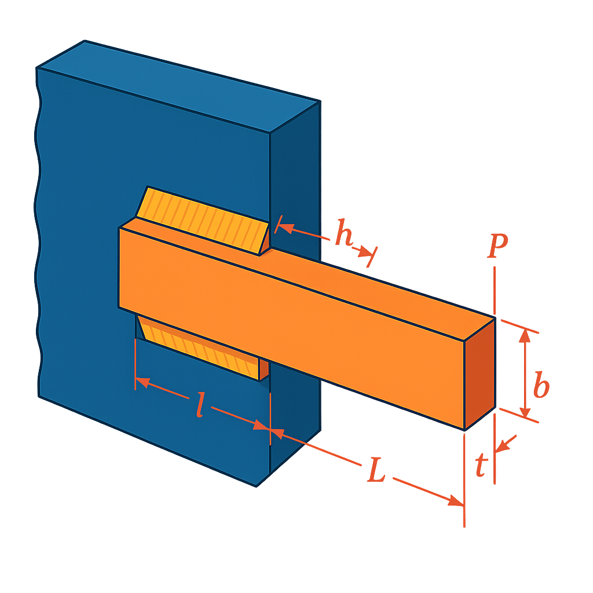

Weld Beam Design Optimization¶
Problem Overview¶
The weld beam design problem is a classic mechanical engineering optimization problem that involves designing a welded beam for minimum cost while satisfying various constraints related to stress, deflection, and geometry.

Objective¶
Minimize the cost of the welded beam, given by:
Where: - \(h\) = weld thickness - \(l\) = length of welded joint - \(t\) = width of the beam - \(b\) = thickness of the beam
Design Variables¶
| Variable | Description | Range |
|---|---|---|
| \(h\) | Weld thickness | [0.125, 5] |
| \(l\) | Length of welded joint | [0.1, 10] |
| \(t\) | Width of the beam | [0.1, 10] |
| \(b\) | Thickness of the beam | [0.1, 5] |
Constraints¶
- Shear stress constraint: \(\tau \leq \tau_{max} = 13600\) psi
Where \(\tau\) is calculated as: \(\tau = \sqrt{\tau_p^2 + 2\tau_p\tau_d\frac{l}{2R} + \tau_d^2}\) \(\tau_p = \frac{P}{\sqrt{2}hl}\) \(\tau_d = \frac{P(L+l/2)R}{J}\) \(R = \sqrt{\frac{l^2}{4} + \left(\frac{h+t}{2}\right)^2}\) \(J = 2 \left(\sqrt{2} \cdot h \cdot l \cdot \left(\frac{l^2}{12} + \left(\frac{h+t}{2}\right)^2\right)\right)\)
- Normal stress constraint: \(\sigma \leq \sigma_{max} = 30000\) psi
Where: \(\sigma = \frac{6PL}{bt^2}\)
-
Geometric constraint: \(h \leq b\)
-
Buckling load constraint: \(P \leq P_c\)
Where: \(P_c = \frac{4.013E\sqrt{t^2b^6/36}}{L^2}\left(1-\frac{t}{2L}\sqrt{\frac{E}{4G}}\right)\)
- Deflection constraint: \(\delta \leq \delta_{max} = 0.25\) inches
Where: \(\delta = \frac{4PL^3}{Ebt^3}\)
- Minimum thickness constraint: \(h \geq 0.125\)
Problem Constants¶
- Load: \(P = 6000\) lb
- Length: \(L = 14\) inches
- Young's modulus: \(E = 30 \times 10^6\) psi
- Shear modulus: \(G = 12 \times 10^6\) psi
- Maximum shear stress: \(\tau_{max} = 13600\) psi
- Maximum normal stress: \(\sigma_{max} = 30000\) psi
- Maximum deflection: \(\delta_{max} = 0.25\) inches
Optimal Solution¶
The reported optimal solution is: - \(h = 0.205730\) - \(l = 3.470489\) - \(t = 9.036624\) - \(b = 0.205730\) - Cost = \(1.7248\) (objective function value)
Implementation with PyEGRO¶
"""
Welded Beam Design Problem
Example of constrained optimization using GA with PyEGRO
Objective:
Minimize fabrication cost of a welded beam
Constraints:
- Shear stress ≤ 13,600 psi
- Normal stress ≤ 30,000 psi
- Buckling, deflection, geometry, and minimum thickness
"""
import numpy as np
from PyEGRO.optimize.GA import run_deterministic_optimization, save_optimization_results
# === Problem constants ===
P = 6000 # load in lb
L = 14 # length in inches
E = 30e6 # psi
G = 12e6 # psi
tau_max = 13600
sigma_max = 30000
delta_max = 0.25
# === Objective function ===
def weld_beam_cost(X):
X = np.atleast_2d(X)
return np.array([
1.10471 * h**2 * l + 0.04811 * t * b * (14 + l)
for h, l, t, b in X
])
# === Constraint functions ===
def constraint_tau(X):
results = []
for h, l, t, b in np.atleast_2d(X):
R = np.sqrt(l**2 / 4 + ((h + t) / 2)**2)
J = 2 * (np.sqrt(2) * h * l * ((l**2 / 12) + ((h + t) / 2)**2))
tau_p = P / (np.sqrt(2) * h * l)
tau_d = (P * (L + l / 2) * R) / J
tau = np.sqrt(tau_p**2 + 2 * tau_p * tau_d * l / (2 * R) + tau_d**2)
results.append(tau - tau_max)
return np.array(results)
def constraint_sigma(X):
return np.array([
6 * P * L / (b * t**2) - sigma_max
for h, l, t, b in np.atleast_2d(X)
])
def constraint_geometry(X):
return np.array([h - b for h, l, t, b in np.atleast_2d(X)]) # h - b <= 0
def constraint_buckling(X):
results = []
for h, l, t, b in np.atleast_2d(X):
Pc = (4.013 * E * np.sqrt(t**2 * b**6 / 36)) / (L**2) * (1 - t / (2 * L) * np.sqrt(E / (4 * G)))
results.append(P - Pc)
return np.array(results)
def constraint_deflection(X):
return np.array([
4 * P * L**3 / (E * b * t**3) - delta_max
for h, l, t, b in np.atleast_2d(X)
])
def constraint_thickness(X):
return np.array([0.125 - h for h, l, t, b in np.atleast_2d(X)])
# === Define problem info ===
data_info = {
'variables': [
{'name': 'h', 'vars_type': 'design_vars', 'range_bounds': [0.125, 5], 'description': 'Weld thickness'},
{'name': 'l', 'vars_type': 'design_vars', 'range_bounds': [0.1, 10], 'description': 'Length of welded joint'},
{'name': 't', 'vars_type': 'design_vars', 'range_bounds': [0.1, 10], 'description': 'Width of the beam'},
{'name': 'b', 'vars_type': 'design_vars', 'range_bounds': [0.1, 5], 'description': 'Thickness of the beam'}
]
}
# === List of constraint functions ===
constraint_functions = [
constraint_tau,
constraint_sigma,
constraint_geometry,
constraint_buckling,
constraint_deflection,
constraint_thickness
]
# === Run optimization ===
results = run_deterministic_optimization(
data_info=data_info,
true_func=weld_beam_cost,
constraint_funcs=constraint_functions,
pop_size=600,
n_gen=100,
sampling_method='lhs',
crossover_prob=0.9,
crossover_eta=15,
mutation_eta=20
)
# === Save results ===
save_optimization_results(
results=results,
data_info=data_info,
save_dir='WELD_BEAM_DIRECT_CONSTRAINED'
)
# === Print result ===
print("\nOptimized Solution:")
h, l, t, b = results['best_solution']
print(f" h: {h:.6f}")
print(f" l: {l:.6f}")
print(f" t: {t:.6f}")
print(f" b: {b:.6f}")
print(f"Objective Value: {results['best_fitness']:.6f}")
print(f"Feasible: {results['is_feasible']}")
References¶
- Rao, S.S. (2019). Engineering Optimization: Theory and Practice. 5th Edition, John Wiley & Sons.
- Deb, K. (2000). An efficient constraint handling method for genetic algorithms. Computer Methods in Applied Mechanics and Engineering, 186(2-4), 311-338.
- Coello Coello, C.A. (2000). Use of a self-adaptive penalty approach for engineering optimization problems. Computers in Industry, 41(2), 113-127.
- Cagnina, L. C., Esquivel, S. C., & Coello, C. A. C. (2008). Solving engineering optimization problems with the simple constrained particle swarm optimizer. Informatica, 32(3).